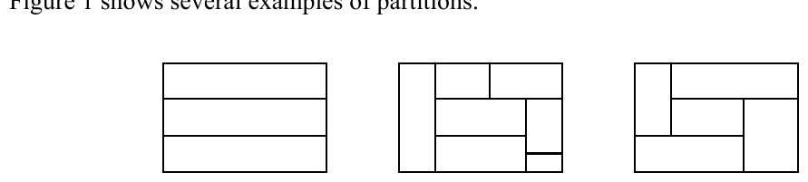
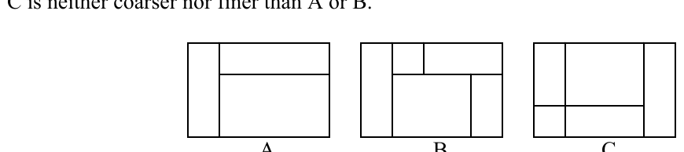
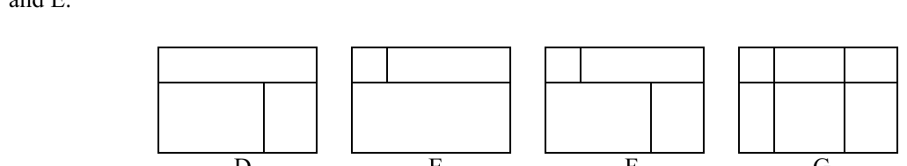
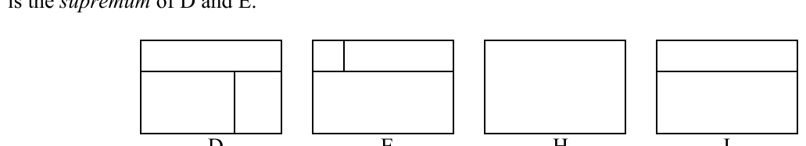

2002 ACM Programming Contest World Finals · Problem G
A partition of a rectangle is a subdivision of the rectangle into a set of smaller, non-overlapping sub-rectangles. Figure 1 shows several examples of partitions.

Figure 2 shows three equal sized rectangles, partitioned into sub-rectangles. Partition B is obtained from partition A by partitioning two of the sub-rectangles of A. Generally, if a partition B is obtained from A by partitioning one or more of its sub-rectangles, we say that B is finer than A, or that A is coarser than B. This relation is partial: partition C is neither coarser nor finer than A or B.

Given two partitions D and E of the same rectangle, infinitely many partitions exist that are finer than both D and E. In Figure 3 both F and G are finer than D and E. Among the partitions that are finer than both D and E, a unique one exists that is coarsest. This partition is called the infimum of D and E. In Figure 3, partition F is the infimum of D and E.

In Figure 4, both H and J are coarser than D and E. Here J is the finest partition that is coarser than D and E. Then J is the supremum of D and E.

Write a program that, given two partitions of the same rectangle, finds the infimum and the supremum of these partitions.
The input file contains one or more test cases. The first line of each test case gives the width w and height h of the rectangle (0 < w, h ≤ 20). In the next h+1 lines the two partitions are given, as in the sample. Each of these lines contains 4*w+3 characters. The first 2*w+1 of these belong to the first partition; the last 2*w+1 of these belong to the second partition. A space separates the two partitions. Horizontal lines are created using underscores ‘_’, vertical lines using ‘|’.
The input is terminated by a pair of zeroes.
For every case in the input file the output contains a single line containing the case number (in the format shown in the sample), followed by the infimum and the supremum of the two partitions, using the same format as the input.
Place a blank line after the output of each test case
4 3 _ _ _ _ _ _ _ _ |_ _ _ _| |_|_ _ _| | | | | | |_|_ _| |_ _ _| 3 4 _ _ _ _ _ | | | | | | | | | |_|_ _| |_|_ _| | | | |_ _|_| |_ _|_| 0 0
Case 1: _ _ _ _ _ _ _ _ |_|_ _| |_ _ _| | | | | | |_|_ _| |_ _ _| Case 2: _ _ _ _ _ | | | | | |_|_ _| | | |_|_|_ | | |_ _|_| |_ _